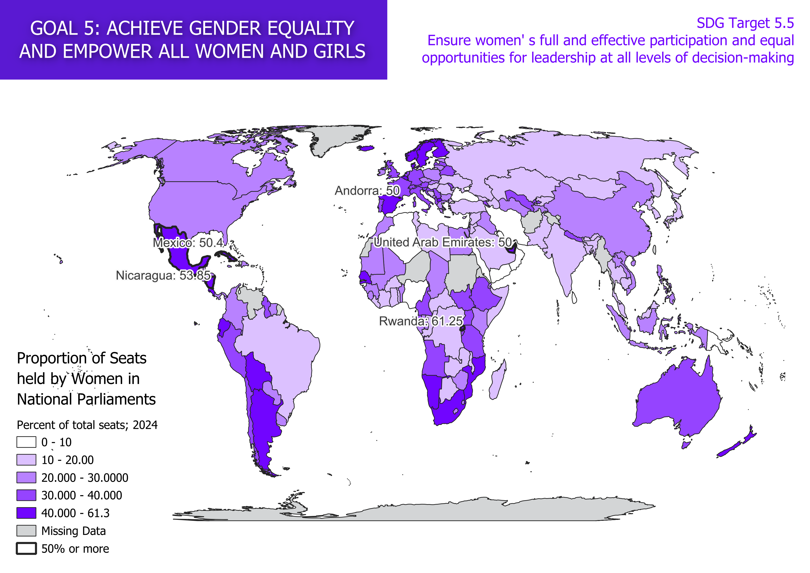
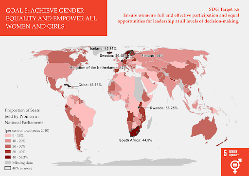

Choropleth Map
What is a choropleth map?
A choropleth map is a type of map that shows different values over geographical areas, making use of different colours or shades of colour. Choropleth maps are effective in conveying a large amount of information, presenting the viewer clearly with what is important. Darker colours stand out quite well, grabbing the viewers attention immediately. The maps are usually simple to understand. However, the view can be distorted by changing the range of each colour, which makes different colorings tell a different story. The values have abrupt boundaries, assuming one value per country and changing immediately at the borders, rather than internal differences or gradual changes.

What does this map tell us?
This map shows the proportion of seats held by women in national parliaments and local governments (indicator 5.5.1). The darker the colour, the higher the percentage of women in the national parliament. Countries outlined with a darker outline have a proportion of 50% or more. This map fits in with SDG goal 5: achieve gender equality and empower all women and girls. The target is to ensure women’ s full and effective participation and equal opportunities for leadership at all levels of decision making.
The Process
During the making of this map, I learned the basic workings of QGIS, such as where the main functions are located. I also learned to work with the database and join it in the right way with the map. Furthermore, I learned what different values and aspects meant, since the instructions did not always match up with the terms shown in my QGIS process. I also learned to triple check whether I saved my map properly, since I had to remake the entire thing this time.
Did the proportion of seats held by women change over time?
I compared this map to a similar map made by my fellow student Lexi. She mapped the data for 2010, so there is a 14 year difference. Her map is visible to the left, in red. There are a few differences to be found between the maps. First, in 2024, there are six countries with 50% or more seats held by women. In 2010, this was only one country. Furthermore, there are some countries that did not have data in 2010, but do in 2024. Lastly, the USA and Egypt increased the proportion of seats held by women largely.
Leaflet
We made an interactive map of the proportion of seats held by women. If you hover over the different countries, you can see the proportion. During the making of this, I learned a lot, working with attributes and javascript. For example, I figured out how to round up the percentages, instead of having many decimals. This code makes use of a "if-else" process. Belof you can see the interactive map.